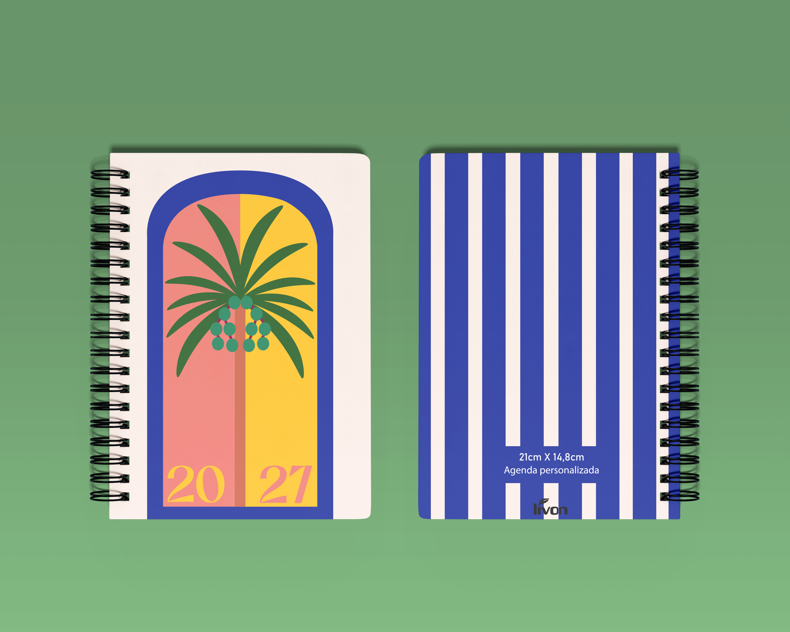

Cadernos
Parte 1
Projeto gráfico desenvolvido a partir da combinação entre texturas orgânicas, composição minimalista e elementos botânicos. A proposta foi transformar um objeto cotidiano em uma peça visual mais expressiva, explorando contraste, materialidade e equilíbrio entre simplicidade e detalhe
A Estética
Nesta primeira fase, focamos na harmonização entre o papel texturizado e padrões botânicos simplificados. O objetivo é criar uma conexão imediata entre o usuário e o ato de escrever.


Coleção Primária
Cadernos
Parte 2
arrow_forward